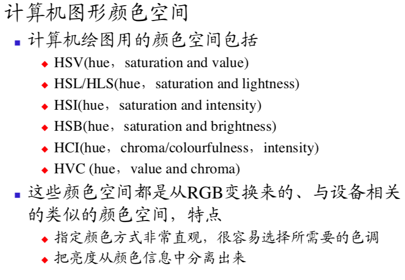
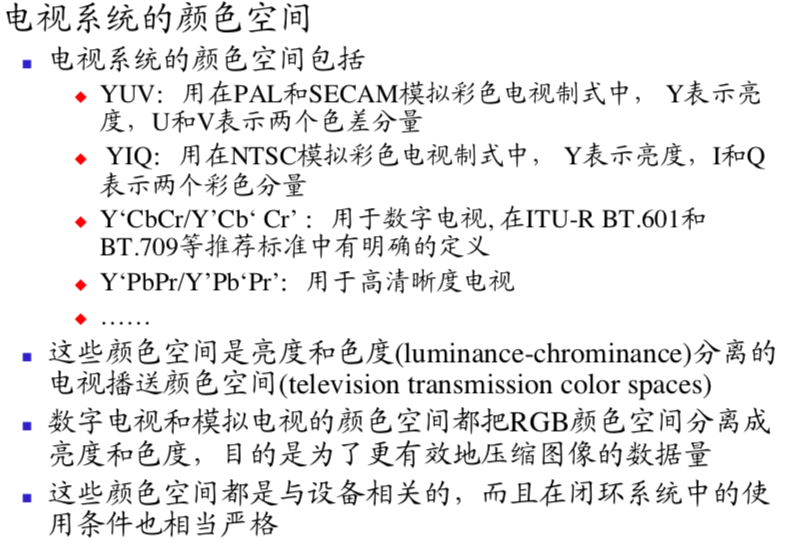
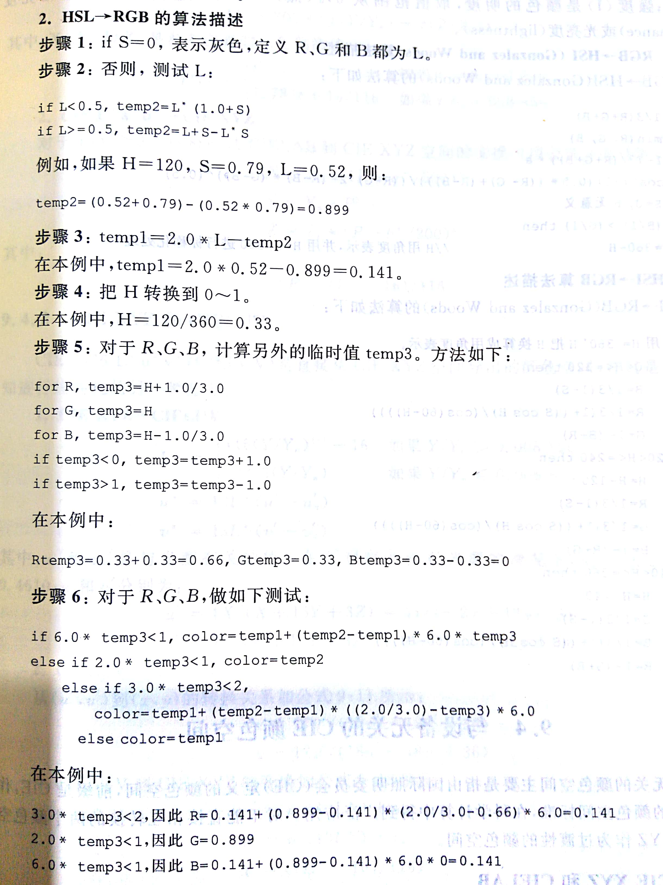

<!DOCTYPE html>
<html lang="zh-CN" data-default-color-scheme=&#34;light&#34;>


<head>
  <meta charset="UTF-8">
  <link rel="apple-touch-icon" sizes="76x76" href="/img/favicon.jpg">
  <link rel="icon" href="/img/favicon.jpg">
  <meta name="viewport"
        content="width=device-width, initial-scale=1.0, maximum-scale=1.0, user-scalable=no, shrink-to-fit=no">
  <meta http-equiv="x-ua-compatible" content="ie=edge">
  
  <meta name="theme-color" content="#2f4154">
  <meta name="description" content="Lecture note：多媒体技术概念、无损压缩算法、声音编码、色彩数字图像基础、颜色的度量、颜色空间变换、彩色电视基础、MPEG、MPEG声音、MPEG电视">
  <meta name="author" content="樵鹏举">
  <meta name="keywords" content="">
  
  <title>多媒体技术 - QiaoPengju</title>

  <link  rel="stylesheet" href="https://cdn.jsdelivr.net/npm/bootstrap@4.5.3/dist/css/bootstrap.min.css" />


  <link  rel="stylesheet" href="https://cdn.jsdelivr.net/npm/github-markdown-css@4.0.0/github-markdown.min.css" />
  <link  rel="stylesheet" href="/lib/hint/hint.min.css" />

  
    
    
      
      <link  rel="stylesheet" href="https://cdn.jsdelivr.net/npm/highlight.js@10.6.0/styles/github-gist.min.css" />
    
  

  
    <link  rel="stylesheet" href="https://cdn.jsdelivr.net/npm/@fancyapps/fancybox@3.5.7/dist/jquery.fancybox.min.css" />
  


<!-- 主题依赖的图标库，不要自行修改 -->

<link rel="stylesheet" href="//at.alicdn.com/t/font_1749284_ba1fz6golrf.css">


<link rel="stylesheet" href="//at.alicdn.com/t/font_1736178_kmeydafke9r.css">


<link  rel="stylesheet" href="/css/main.css" />

<!-- 自定义样式保持在最底部 -->


  <script id="fluid-configs">
    var Fluid = window.Fluid || {};
    var CONFIG = {"hostname":"qiaopengju.github.io","root":"/","version":"1.8.10","typing":{"enable":true,"typeSpeed":70,"cursorChar":"_","loop":false},"anchorjs":{"enable":true,"element":"h1,h2,h3,h4,h5,h6","placement":"right","visible":"hover","icon":""},"progressbar":{"enable":true,"height_px":3,"color":"#29d","options":{"showSpinner":false,"trickleSpeed":100}},"copy_btn":true,"image_zoom":{"enable":true,"img_url_replace":["",""]},"toc":{"enable":true,"headingSelector":"h1,h2,h3,h4,h5,h6","collapseDepth":0},"lazyload":{"enable":true,"loading_img":"/img/default_loading.gif","onlypost":false,"offset_factor":2},"web_analytics":{"enable":false,"baidu":null,"google":null,"gtag":null,"tencent":{"sid":null,"cid":null},"woyaola":null,"cnzz":null,"leancloud":{"app_id":"xsVJdJy2S5FwG6mmW2YPfvB8-gzGzoHsz","app_key":"AAjqnbedJOiSfIxIGx14LnUp","server_url":null}}};
  </script>
  <script  src="/js/utils.js" ></script>
  <script  src="/js/color-schema.js" ></script>
<meta name="generator" content="Hexo 5.4.0"></head>


<body>
  <header style="height: 70vh;">
    <nav id="navbar" class="navbar fixed-top  navbar-expand-lg navbar-dark scrolling-navbar">
  <div class="container">
    <a class="navbar-brand"
       href="/">&nbsp;<strong>QiaoPengju's blog</strong>&nbsp;</a>

    <button id="navbar-toggler-btn" class="navbar-toggler" type="button" data-toggle="collapse"
            data-target="#navbarSupportedContent"
            aria-controls="navbarSupportedContent" aria-expanded="false" aria-label="Toggle navigation">
      <div class="animated-icon"><span></span><span></span><span></span></div>
    </button>

    <!-- Collapsible content -->
    <div class="collapse navbar-collapse" id="navbarSupportedContent">
      <ul class="navbar-nav ml-auto text-center">
        
          
          
          
          
            <li class="nav-item">
              <a class="nav-link" href="/">
                <i class="iconfont icon-home-fill"></i>
                首页
              </a>
            </li>
          
        
          
          
          
          
            <li class="nav-item">
              <a class="nav-link" href="/archives/">
                <i class="iconfont icon-archive-fill"></i>
                归档
              </a>
            </li>
          
        
          
          
          
          
            <li class="nav-item">
              <a class="nav-link" href="/categories/">
                <i class="iconfont icon-category-fill"></i>
                分类
              </a>
            </li>
          
        
          
          
          
          
            <li class="nav-item">
              <a class="nav-link" href="/to-do-list/">
                <i class="iconfont icon-plan"></i>
                To Do List
              </a>
            </li>
          
        
          
          
          
          
            <li class="nav-item">
              <a class="nav-link" href="/tags/">
                <i class="iconfont icon-tags-fill"></i>
                标签
              </a>
            </li>
          
        
          
          
          
          
            <li class="nav-item">
              <a class="nav-link" href="/about/">
                <i class="iconfont icon-user-fill"></i>
                关于
              </a>
            </li>
          
        
        
          <li class="nav-item" id="search-btn">
            <a class="nav-link" target="_self" data-toggle="modal" data-target="#modalSearch">&nbsp;<i
                class="iconfont icon-search"></i>&nbsp;</a>
          </li>
        
        
          <li class="nav-item" id="color-toggle-btn">
            <a class="nav-link" target="_self">&nbsp;<i
                class="iconfont icon-dark" id="color-toggle-icon"></i>&nbsp;</a>
          </li>
        
      </ul>
    </div>
  </div>
</nav>

    <div class="banner" id="banner" parallax=true
         style="background: url('/img/default_post.jpg') no-repeat center center;
           background-size: cover;">
      <div class="full-bg-img">
        <div class="mask flex-center" style="background-color: rgba(0, 0, 0, 0.3)">
          <div class="page-header text-center fade-in-up">
            <span class="h2" id="subtitle" title="多媒体技术">
              
            </span>

            
              <div class="mt-3">
  
  
    <span class="post-meta">
      <i class="iconfont icon-date-fill" aria-hidden="true"></i>
      <time datetime="2018-06-25 13:11" pubdate>
        2018年6月25日 下午
      </time>
    </span>
  
</div>

<div class="mt-1">
  
    
    <span class="post-meta mr-2">
      <i class="iconfont icon-chart"></i>
      9.9k 字
    </span>
  

  
    
    <span class="post-meta mr-2">
      <i class="iconfont icon-clock-fill"></i>
      
      
      107
       分钟
    </span>
  

  
  
    
      <!-- LeanCloud 统计文章PV -->
      <span id="leancloud-page-views-container" class="post-meta" style="display: none">
        <i class="iconfont icon-eye" aria-hidden="true"></i>
        <span id="leancloud-page-views"></span> 次
      </span>
    
  
</div>

            
          </div>

          
        </div>
      </div>
    </div>
  </header>

  <main>
    
      

<div class="container-fluid nopadding-x">
  <div class="row nomargin-x">
    <div class="d-none d-lg-block col-lg-2"></div>
    <div class="col-lg-8 nopadding-x-md">
      <div class="container nopadding-x-md" id="board-ctn">
        <div class="py-5" id="board">
          <article class="post-content mx-auto">
            <!-- SEO header -->
            <h1 style="display: none">多媒体技术</h1>
            
            <div class="markdown-body">
              <p>​    </p>
<!-- more -->
<h3 id="多媒体技术"><a href="#多媒体技术" class="headerlink" title="多媒体技术"></a>多媒体技术</h3><p>多媒体与传统媒体的不同</p>
<blockquote>
<p>信号本质不同;模拟与数字 </p>
<p>被动接受与主动交互 </p>
</blockquote>
<p>多媒体</p>
<blockquote>
<p><strong>融合两种或两种以上媒体的人-机互动的信息交流和传播媒体</strong></p>
<p>特点：</p>
<ul>
<li>是信息交流和传播媒体  </li>
<li>是人-机交互式媒体  </li>
<li>都是以数字形式存储和传输 </li>
<li>传播信息的媒体的种类很多 </li>
</ul>
<p>ISO93a的分类：</p>
<ul>
<li>感知媒体 ：帮助人来感知环境 (视听触觉)</li>
<li>表示媒体：用计算机的内部表示刻画表示媒体(编码)</li>
<li>表现媒体：信息输入输出的工具和设备(交互)</li>
<li>存储媒体：支持信息存储的数据载体</li>
<li>传输媒体：传输数据信息，支持连续媒体的数据传输</li>
<li>信息交换媒体 ：所有用于传输和存储的信息载体</li>
</ul>
</blockquote>
<p>多媒体数据</p>
<blockquote>
<p>特点：</p>
<ul>
<li>数据量巨大;</li>
<li>数据类型多;</li>
<li>数据输入输出复杂;</li>
</ul>
</blockquote>
<p>超文本</p>
<blockquote>
<p><strong>超文本是通过复杂的、非顺序的关联关系连接在一起的一种文本，其真正含义是“链接”的意思</strong> </p>
</blockquote>
<p>超媒体</p>
<blockquote>
<p>使用文本、图形、图像、声音和电视图像等媒体任意组合的一种交互式信息传播媒体</p>
<ul>
<li>多媒体是超媒体的一个子集</li>
</ul>
</blockquote>
<p>多媒体系统</p>
<p>DCIKW</p>
<blockquote>
<p>data(数据) ：以数字、字符或图像等可读语言或其他记录方法表示的事实、概 念或计算机指令 </p>
<p>Content(内容)：内容是对数据的描述 </p>
<p>information(信息)：信息是对内容的解释，也就是数据的含义 </p>
<p> knowledge(知识)：在某个感兴趣领域中的事实、概念和关系 </p>
<p>wisdom(智慧)：知识累积后产生的洞察力、判断力和发明创造能力 </p>
</blockquote>
<p>多媒体内容</p>
<blockquote>
<p>多媒体内容是对多媒体数据的描述，多媒体信息是对多媒体 内容的描述，多媒体内容不都是多媒体信息，多媒体信息不一定包含全部多媒体内容</p>
</blockquote>
<p>多媒体内容处理分类 ~6~</p>
<blockquote>
<p>多媒体内容分析</p>
<p>多媒体内容分类</p>
<p>多媒体内容管理多媒体内容搜索</p>
<p>多媒体内容检索</p>
<p>多媒体内容浏览 </p>
</blockquote>
<p>多媒体国际标准</p>
<blockquote>
<p>ITU标准 </p>
<p>ISO/IEC标准</p>
<p>因特网技术标准 </p>
<p>万维网协会(W3C)标准</p>
</blockquote>
<p>数据压缩</p>
<blockquote>
<p>意义：</p>
<ul>
<li>降低多媒体数据对存储器容量的要求 </li>
<li>降低多媒体数据对传输带宽的要求 </li>
</ul>
<p>分类：</p>
<ul>
<li>无损压缩: 经过压缩和解压缩后的数据与压缩前的 原始数据完全一样的数据压缩技术 </li>
<li>有损压缩:经过压缩和解压缩后的数据与压缩前的 原数据不完全一样 </li>
</ul>
</blockquote>
<p>编码方式</p>
<blockquote>
<p>熵编码:不考虑数据源的无损数据压缩技术。其核 心思想是按照符号出现的概率大小给符号分配长度合适的代码 </p>
<p>源编码:考虑数据源特性的数据压缩技术。编码时 考虑信号源的特性和信号的内容 </p>
<p>混合编码:组合源编码和熵编码的数据有损压缩技术 </p>
</blockquote>
<p></p>
<p>计算机网络</p>
<blockquote>
<ul>
<li><p>因特网：通过网络设备把世界各国使用TCP/IP协议的计算机相互连接在一起的计算机网络 </p>
</li>
<li><p>互联网：泛指多种网络通过网络互连设备互连而成的网络 </p>
</li>
<li><p>万维网：分布在全世界所有HTTP服务器上互相连接的超媒体文档的集合 </p>
<blockquote>
<p>万维网的三项核心技术 </p>
<ul>
<li>统一资源地址(URL)</li>
<li>超文本传输协议(HTTP) </li>
<li>超链接(HyperLink)  </li>
</ul>
</blockquote>
</li>
</ul>
</blockquote>
<p>通用内容标记语言SGML</p>
<blockquote>
<p>国际标准化组织(ISO)采用的一个信息管理标准 。该标准定义独立于平台和应用的文本文档的格式、索引和链接信息，为用户提供一种类似于语法的机制，用来定义文档的结 构和指示文档结构的标签</p>
<p>SGML的精华是把文档的内容与样式分开处理  </p>
</blockquote>
<p>HTML</p>
<blockquote>
<p>HTML是万维网上的文档所用的标记语言 </p>
<ul>
<li>HTML是SGML的一个子集。SGML使用标签来标志文档中的文本或图形之类的元素， 并告诉Web浏览器该如何向用户显示这些元素，以及应该如何响应用户的行为，例如当用户通 过按键或鼠标单击某个链接时该如何响应 </li>
</ul>
</blockquote>
<p>多媒体、万维网和因特网之间有何关系? </p>
<blockquote>
<p>多媒体构成了超媒体系统，超媒体系统构成了万维网，万维网是因特网上使用TCP/IP协议和UDP/IP协议的系统</p>
</blockquote>
<h3 id="无损压缩"><a href="#无损压缩" class="headerlink" title="无损压缩"></a>无损压缩</h3><p>数据可被压缩的依据 </p>
<ul>
<li>数据本身存在冗余  </li>
<li>听觉系统的敏感度有限 </li>
<li>视觉系统的敏感度有限 </li>
</ul>
<p>三种多媒体数据类型</p>
<blockquote>
<p>文字 (text)数据——无损压缩 </p>
<blockquote>
<p>根据数据本身的冗余</p>
</blockquote>
<p>声音(audio)数据——有损压缩</p>
<blockquote>
<p>根据数据本身的冗余</p>
<p>根据人的听觉系统特性</p>
</blockquote>
<p>图像(image)/视像(video) 数据——有损压缩</p>
<blockquote>
<p>根据数据本身的冗余</p>
<p>根据人的视觉系统特性 </p>
</blockquote>
</blockquote>
<p>冗余</p>
<blockquote>
<p>人为冗余  </p>
<p>视听冗余</p>
<p>数据冗余</p>
</blockquote>
<p>决策量(注意单位)</p>
<blockquote>
<p>$H_0=log(n)$</p>
<p>条件：有限数目的互斥事件集合</p>
<ul>
<li>Sh (Shannon): 用于以2为底的对数</li>
<li>Nat (natural unit): 用于以e为底的对数 </li>
<li>Hart (hartley):用于以10为底的对数 </li>
</ul>
</blockquote>
<p>信息量(注意单位)</p>
<blockquote>
<p>具有确定概率事件的信息的定量度量 </p>
<p>$I(x)=-log_2P(x)$</p>
<ul>
<li>一个等概率事件的集合，每个事件的信息量等于该集合的决策量 </li>
</ul>
</blockquote>
<p>熵(注意单位)</p>
<blockquote>
<p>有限的互斥和联合穷举事件的集合中，熵为事件的信息量的平均值，也称事件的平均信息量 </p>
<script type="math/tex; mode=display">H(x)=-\sum_{i=1}^np(x_i)log_2p(x_i)=\sum_{i=1}^np(x_i)I(x_i)</script></blockquote>
<p>数据冗余量</p>
<blockquote>
<p>决策量H~0~超过熵H的量</p>
<p>$R=H_0-H$</p>
</blockquote>
<h4 id="统计编码"><a href="#统计编码" class="headerlink" title="统计编码"></a>统计编码</h4><blockquote>
<p>给已知统计信息的符号分配代码的数据无损压缩方法 </p>
<h5 id="香农-范诺编码"><a href="#香农-范诺编码" class="headerlink" title="香农-范诺编码"></a>香农-范诺编码</h5><blockquote>
<p>在香农的源编码理论中，熵的大小表示非冗余的不可压缩的信息量</p>
<p>步骤：</p>
<ul>
<li>按照符号出现的概率减少的顺序将待编码的符号排成序列。</li>
<li>将符号分成两组，使这两组符号概率和相等或几乎相等。</li>
<li>将第一组赋值为0，第二组赋值为1。(书上大0小1)</li>
<li>对每一组，重复步骤2的操作。</li>
</ul>
</blockquote>
<h5 id="Huffman编码"><a href="#Huffman编码" class="headerlink" title="Huffman编码"></a>Huffman编码</h5><blockquote>
<p></p>
<p>(书上大1小0)</p>
</blockquote>
<h5 id="算数编码"><a href="#算数编码" class="headerlink" title="算数编码"></a>算数编码</h5><blockquote>
<p>对10 00 11 00 10 11 01进行算数编码</p>
<ul>
<li>初始化</li>
</ul>
<p></p>
<ul>
<li>确定符号的编码范围 <ul>
<li>编码时输入第1个符号是10，找到它的编码范围是 [0.5, 0.7] </li>
<li>消息中第2个符号00的编码范围是[0, 0.1)，它的间隔 就取[0.5, 0.7)的第一个十分之一作为新间隔[0.5, 0.52) </li>
<li>编码第3个符号11时，取新间隔为[0.514, 0.52) </li>
<li>编码第4个符号00时，取新间隔为[0.514, 0.5146) </li>
<li>依此类推…… </li>
<li>消息的编码输出可以是最后一个间隔中的任意数 </li>
</ul>
</li>
</ul>
<p></p>
<p>解码：</p>
<p></p>
</blockquote>
</blockquote>
<h4 id="行程长度编码"><a href="#行程长度编码" class="headerlink" title="行程长度编码"></a>行程长度编码</h4><blockquote>
<p> </p>
</blockquote>
<h3 id="声音编码"><a href="#声音编码" class="headerlink" title="声音编码"></a>声音编码</h3><p>声音</p>
<blockquote>
<p>声音是听觉器官对声波的感知，而声波是通过介质连续振动 </p>
<p>声音的强弱体现在声波幅度的大小上，音调的高低体现在声音的频率上</p>
</blockquote>
<p>声音频率</p>
<blockquote>
<ul>
<li>高保真声音(high-fidelity audio): 10 ~ 20 000 Hz </li>
<li>音频(audio): 20~ 20000Hz  </li>
<li>话音(speech): 300~3000/3400 Hz  </li>
<li>亚音/次音(subsonic): &lt; 20 Hz  </li>
<li>超声(ultrasonic): &gt; 20 000 Hz </li>
</ul>
</blockquote>
<p>声音的等级</p>
<blockquote>
<p></p>
</blockquote>
<p>声音质量的衡量方法</p>
<blockquote>
<ul>
<li>声音带宽法</li>
<li>客观质量度量</li>
<li>主观质量度量</li>
</ul>
<p>主观评分MOS标准</p>
<p></p>
</blockquote>
<p>声音大小计算</p>
<blockquote>
<p>$(f_s\times 时间长度 \times 采样精度字节数 \times 声道数)/(1024  \times 1024) MB$</p>
<p>立体声：双声道</p>
</blockquote>
<p>采样</p>
<blockquote>
<p>对连续时间的离散化,在某些特定的时刻对模拟信号进行测量的过程  </p>
<ul>
<li>每隔相等的一段时间采样一次，这种采样称为均匀采样 </li>
</ul>
</blockquote>
<p>量化</p>
<blockquote>
<p>对连续幅度的离散化，就是把信号的强度分段</p>
<ul>
<li>如果幅度的划分是等间隔的，就称为线性量化，否则就称为非线性量化 </li>
</ul>
</blockquote>
<p>采样频率</p>
<blockquote>
<p>奈奎斯特理论指出，采样频率不应低于声音信号最高频率的两倍，这样就能把以数字表达的声音还原成原来的声 音，这叫做无损数字化</p>
<p>$f<em>s\geq 2f</em>{max}$</p>
</blockquote>
<p>采样精度</p>
<blockquote>
<ul>
<li><p>度量声音波形幅度的精确程度，用每个声音样本的位数(即bps)表示 </p>
</li>
<li><p>量化阶：精度($\frac{1}{2^n}$)</p>
</li>
<li><p>信号噪声比：(n为每个样本位数)</p>
<script type="math/tex; mode=display">SNR=20log_{10}\frac{V_{signal}}{V_{noise}}=20lg2^n</script><p> 其中，V~signal~表示信号电压，V~noise~表示量化噪声电压(模拟信号的采样值和与它最接近的数 字数值之间的差值)，SNR的单位为分贝(db) </p>
</li>
</ul>
</blockquote>
<p>脉冲编码调制(PCM) </p>
<blockquote>
<p></p>
<p>输入是模拟信号，输出是PCM样本。 </p>
<p>防失真滤波器:低通滤波器，用来滤除声音频带以 外的信号 </p>
<p>波形编码器:可理解为采样器 </p>
<p>量化器:可理解为“量化阶大小(step-size)”生成器或者称为“量化间隔”生成器 </p>
<p>时分多路复用</p>
<blockquote>
<p>24路制</p>
<ul>
<li>每秒钟传送8000帧，每帧 125μs </li>
<li>12帧组成1复帧 </li>
<li>每帧由24个时间片(信道)和1位同步位组成</li>
<li>每个信道每次传送8位代码 ，1帧有193位</li>
<li>数据传输率R=8000x193=1544kb/s</li>
<li>每一个话路的数据传输率= 8000×8=64 kb/s </li>
</ul>
<p>30路制</p>
<ul>
<li>每秒钟传送8000帧，每帧125μs </li>
<li>16帧组成1复帧  </li>
<li>每帧由32个时间片(信道)组成  </li>
<li>每个信道每次传送8位代码  </li>
<li>数据传输率:R=8000×32×8=2048 kb/s  </li>
<li>每一个话路的数据传输率=8000×8=64 kb/s </li>
</ul>
<p>T1等级：1544kb/s数据率(24路制)</p>
<p>E1等级：2048kb/s数据率(30路制)</p>
<p>T2等级：5312kb/s</p>
<p>E2等级：8448kb/s</p>
</blockquote>
</blockquote>
<p>模拟声音数字化的两个步骤 </p>
<blockquote>
<p>采样</p>
<p>量化</p>
</blockquote>
<p>量化方法</p>
<blockquote>
<p>均匀量化</p>
<p>非均匀量化：大的输入信号采用大的量化间隔，小的输入信号采用小的量化间隔 </p>
<blockquote>
<p>$\mu$率压扩：在脉冲编码调制(PCM)系统中，一种模拟信号和数字信号之间进行转换的CCITT压(缩) 扩(展)标准。在北美PCM电话网中，使用μ率压扩算法 </p>
<p>A率压扩：在脉冲编码调制(PCM)系统中，一种模拟信号和数字信号之间进行转换的CCITT压(缩) 扩(展)标准。在欧洲电话网，使用A律压扩算法</p>
</blockquote>
</blockquote>
<p>增量调制</p>
<blockquote>
<p>固定量化阶可能产生的问题：</p>
<ul>
<li><p>斜率过载失真：</p>
<blockquote>
<p>由于当输入信号的斜率较大，<a target="_blank" rel="noopener" href="https://baike.baidu.com/item/%E8%B0%83%E5%88%B6">调制</a>器跟踪不上输入信号的变化</p>
</blockquote>
</li>
<li><p>粒状噪声失真：</p>
<blockquote>
<p>输入信号变化缓慢，增量调制器输出会出现0、1交替的情况</p>
</blockquote>
</li>
</ul>
<p>自适应增量调制(ADM) </p>
<blockquote>
<p>根据输入信号斜率的变化自动调整量化阶Δ的大 小，以使斜率过载和粒状噪声都减到最小。 </p>
<p>在检测到斜率过载时开始增大量化阶Δ，而在输入 信号的斜率减小时降低量化阶Δ </p>
<ul>
<li>例如，宋(Song)在1971描述的ADM技术中提出:每当输出 不变时量化阶增大50%;每当输出值改变时，量化阶减小 50% </li>
<li>又如，由格林弗基斯(Greefkes)在1970年提出的连续可变斜 率增量调制(CVSD)的基本方法是:如果连续可变斜率增量 调制器的输出连续出现三个相同值时，量化阶加一个大的 增量，反之，就加一个小的增量 </li>
</ul>
</blockquote>
</blockquote>
<p>自适应脉冲编码调制 APCM</p>
<blockquote>
<p>根据输入信号幅度大小来改变量化阶大小的一种波形编码技术</p>
<p>自适应</p>
<blockquote>
<ul>
<li>瞬时自适应，即量化阶的大小每隔几个样本就改变 </li>
<li>音节自适应，即量化阶的大小在较长时间里发生变化 </li>
</ul>
</blockquote>
<p>改变量化阶大小的方法</p>
<blockquote>
<p></p>
<p></p>
<p>思想</p>
<blockquote>
<p>根据输入信号幅度大小来改变量化阶大小的一种波形编码技术。这种自适应可以是瞬时自适应，即量化阶的大小每隔几个样本就改变，也可以是音节自适应，即量化阶的大小在较长时间周期里发生变化 </p>
</blockquote>
</blockquote>
</blockquote>
<p>差分脉冲编码调制 DPCM</p>
<blockquote>
<p>基本思想</p>
<blockquote>
<p>利用样本与样本之间存在的信息冗余度来进行编码的一种数据压缩技术。这种技术是根据过去的样本去估算(estimate)下一个样本信号的幅度大小，这个值称为预测值，然后对实际信号值与预测值之差进行量化编码，从而就减少了表示每个样本信号的位数。</p>
<p>它与脉冲编码调制 (PCM)不同的是，PCM是直接对采样信号进行量化编码，而DPCM是对实际信号值与预测值之差进行量化编码，存储或者传送的是差值而不是幅度绝对值，这就降低了传送或存储的数据量。此外，它还能适应大范围变化的输入信号</p>
</blockquote>
</blockquote>
<p>自适应差分脉冲编码调制 ADPCM</p>
<blockquote>
<p>综合了APCM的自适应特性和DPCM系统的差分特 性，是一种性能比较好的波形编码技术 </p>
<p>基本思想</p>
<blockquote>
<ul>
<li><p>利用自适应的思想改变量化阶的大小，即使用小的量化阶(step-size)去编码小的差值，使用大的量化阶去编码大的差值 </p>
</li>
<li><p>使用过去的样本值估算下一个输入样本的预测值，使实际样本值和预测值之间的差值总是最小</p>
</li>
</ul>
</blockquote>
</blockquote>
<p>编码性能</p>
<blockquote>
<p></p>
</blockquote>
<p>MIDI</p>
<blockquote>
<p>音乐合成器乐器和计算机之间交换音乐信息的一种标准协议。 </p>
<p>特点:  文件比较小;容易编辑等 </p>
</blockquote>
<h3 id="色彩数字图像基础"><a href="#色彩数字图像基础" class="headerlink" title="色彩数字图像基础"></a>色彩数字图像基础</h3><p>颜色</p>
<blockquote>
<p>视觉系统对可见光的感知结果，感知的颜色由光的波长决定</p>
<p>颜色只存在于眼睛和大脑</p>
<blockquote>
<ul>
<li>人的视网膜有对红、绿、蓝颜色敏感程度不同的三种锥体细胞</li>
<li>杆状体细胞在光功率极低的条件下才起作用</li>
</ul>
</blockquote>
</blockquote>
<p>有源物体</p>
<blockquote>
<p>一个能发出光波的物体称为有源物体，它的颜色由该物体发出的光波决定 </p>
<p><strong>RGB相加混色模型</strong></p>
<p> 组合红、绿和蓝光波来产生特定颜色的方法叫做相加混色法 </p>
<p> </p>
</blockquote>
<p>无源物体</p>
<blockquote>
<p>一个不发光波的物体称为无源物体 ，它的颜色由该物体吸收或者反射哪些光波决定</p>
<p><strong>CMY相减混色模型</strong></p>
<p> 用三种基本颜色即青色(cyan)、品红(magenta)和黄色 (yellow)的颜料按一定比例混合得到颜色的方法，通常写 成CMY，称为CMY模型</p>
<p> </p>
</blockquote>
<p>图像基本属性</p>
<blockquote>
<p>屏幕分辨率</p>
<blockquote>
<p>水平像素数×垂直像素数，是衡量显示设备再现图像时所能达到的精细程度的度量方法，也称显示分辨率 </p>
</blockquote>
<p>图像分辨率</p>
<blockquote>
<p>图像分辨率也称空间分辨率和像素分辨率,是图像精细程度的度量方法</p>
<p>在图像显示应用中的图像分辨率表示法</p>
<blockquote>
<ul>
<li>物理尺寸:每毫米线数(或行数)</li>
<li>行列像素:像素/行×行/幅，如640像素/行×480行/幅</li>
<li>像素总数:如数码相机上标的500万像素</li>
<li>单位长度上的像素:如像素每英寸(pixels per inch，PPI)</li>
<li>线对数:以黑白相邻的两条线为一对如5对线 </li>
</ul>
</blockquote>
<p>在图像数字化和打印应用中的图像分辨率表示法</p>
<blockquote>
<ul>
<li>通常用多少点每英寸(dots per inch，DPI)表示</li>
<li>分辨率越高，图像质量就越高，像素就越多，要求存储容量就越大</li>
</ul>
</blockquote>
</blockquote>
</blockquote>
<p>像素深度</p>
<blockquote>
<p>存储每个像素所用的位数</p>
</blockquote>
<p>$\alpha$通道</p>
<blockquote>
<p>在每个像素用32位表示的图像表示法中的高8位，用于表示像素在一个对象中的透明度 </p>
</blockquote>
<p>真彩色</p>
<blockquote>
<p>像素颜色直接用RGB表示</p>
</blockquote>
<p>伪彩色</p>
<blockquote>
<p>将像素值当作彩色查找表(color look-up table)的表项入口地址，查找显示图像时要使用的R，G，B值，用查找出的R，G，B值产生的彩色 </p>
<ul>
<li>使用查找得到的R，G，B数值显示的彩色是真的，但不是图像本身真正的颜色，它没有完全反映原图的颜色 </li>
</ul>
</blockquote>
<p>直接色</p>
<blockquote>
<p>每个像素值由R，G，B分量构成，每个分量作为单独的索引值对它做变换，用变换后的R，G，B值产生的颜色 </p>
</blockquote>
<p>矢量图</p>
<blockquote>
<p>根据数学规则描述而生成的图 </p>
<p>优点</p>
<ul>
<li>易对图像变换</li>
<li>可快速生成、文件大小小</li>
</ul>
<p>缺点</p>
<ul>
<li>很难用数学方法来描述真实世界的彩照 </li>
</ul>
</blockquote>
<p>位图</p>
<blockquote>
<p>用像素值阵列表示的图</p>
</blockquote>
<p>灰度图</p>
<blockquote>
<p>只有明暗不同的像素而没有彩色像素组成的图像</p>
<p>只有黑白两种颜色的图像称为<strong>单色图像</strong> </p>
</blockquote>
<p>$\gamma$校正</p>
<blockquote>
<p>在屏幕上显示用离散量表示的色彩时采用的一种色彩调整技术。计算机显示器和电视采用的阴极射线管产生的光亮度与输入的电压不成正比。$\gamma$值一般在2.5左右 </p>
<p>在把输入电压送到显示设备之前对它做一次变换，使输入到显示设备的电压′= (输入电压)^γ^ </p>
<p>光亮度=(输入电压)$^\gamma$</p>
</blockquote>
<p>JPEG</p>
<blockquote>
<p>Joint Photographic Experts Group的缩写，联合图像专家组</p>
<p>在压缩比为25∶1的情况下，压缩后还原得到的图像与原始 图像相比，非图像专家难于找出它们之间的区别 </p>
<p>JPEG标准  </p>
<blockquote>
<p>静态图像数据压缩标准，用于压缩灰度图像和彩色图像 </p>
</blockquote>
<p>步骤</p>
<ul>
<li>使用正向离散余弦变换(FDCT)把空间域表示的 图变换成频率域表示的图</li>
<li>使用加权函数对DCT系数进行量化</li>
<li>使用霍夫曼编码器对量化系数进行编码</li>
</ul>
<p>JPEG算法与颜色空间无关 </p>
<p>DCT(离散余弦变换 )</p>
<blockquote>
<ul>
<li>用余弦函数的离散值构成的变换矩阵对信号进行数学变换 </li>
<li>可将能量集中到频率较低的系数上 </li>
<li>将分量图像分成8×8的图块 </li>
</ul>
</blockquote>
<p>量化</p>
<blockquote>
<p>对DCT变换后的系数进行量化</p>
<ul>
<li>目的：增加0值个数</li>
<li>分开使用亮度量化表和色度量化表</li>
</ul>
</blockquote>
<p>Z字形编排</p>
<blockquote>
<p></p>
<p>目的：增加连续0元个数</p>
</blockquote>
<p>熵编码</p>
<blockquote>
<p>用DPCM对DC系数进行编码，用RLE对AC系数编码</p>
<p>使用Huffman编码对整体编码</p>
</blockquote>
<p>步骤特性</p>
<blockquote>
<ul>
<li>DCT变换: 无损 </li>
<li>量化: <strong>有损</strong>  </li>
<li>Z字形编码: 无损  </li>
<li>使用DPCM对直流系数(DC)进行编码: 无损 </li>
<li>使用RLE对交流系数(AC)进行编码: 无损 </li>
<li>熵编码:无损 </li>
</ul>
</blockquote>
</blockquote>
<p>BMP文件</p>
<blockquote>
<p></p>
<p>无损压缩</p>
<p>伪彩色</p>
</blockquote>
<p>GIF</p>
<blockquote>
<p>采用LZW压缩(无损压缩)</p>
<p>伪彩色</p>
<p>透明性</p>
</blockquote>
<p>PNG</p>
<blockquote>
<p>PNG用来存储灰度图像时，灰度图像的深度可多到16位，存储彩色图像时，彩色图像的深度可多到48位，并且还可存储多到16位的α通道数据</p>
<p>采用LZ77派生的无损压缩算法</p>
<p>伪彩色</p>
<p>透明性</p>
</blockquote>
<p>总结</p>
<blockquote>
<p></p>
<p>16777216 = 2^24^</p>
<p>256 = 2^8^</p>
</blockquote>
<h3 id="颜色的度量"><a href="#颜色的度量" class="headerlink" title="颜色的度量"></a>颜色的度量</h3><p>颜色的研究史</p>
<blockquote>
<ul>
<li><p>Newton:发明了色环，发现白光包含所有可见光谱波长</p>
<ul>
<li></li>
</ul>
</li>
<li><p>Thomas :认为人的眼睛有三种不同类型的颜色感知接收器，大体上相当于红、绿和蓝 三种基色的接收器。 </p>
</li>
<li><p>Maxwell:探索了三种基色的关系，并且认识到三种基色相加产生的色调不能覆盖整个感知色调的色域，而使用相减混色产生的色调却可以。他认识到彩色表面的色调和饱和度对眼睛的敏感度比明度低。Maxwell的工作可被认为是现代色度学的基础。 </p>
</li>
<li><p>Munsell:开发了第一个广泛被接受的颜色次序制，称为Munsell color system，对颜色作了精确的描述并用在他的教学中。Munsell颜色次序制也是其他颜色体系的基础。</p>
<blockquote>
<p> 指出颜色的HSB特性，把明度从色调和饱和度中分离出来</p>
</blockquote>
</li>
<li><p>Ostwald:开发了Ostwald颜色体系，根据对颜色起决定作用的波长、纯度和亮度来映射 色调、饱和度和明度的值。</p>
<blockquote>
<p>C(全彩色)W(白色)B(黑色) </p>
</blockquote>
</li>
<li><p>CIE定义了许多度量颜色的标准 </p>
</li>
</ul>
</blockquote>
<p>颜色特性</p>
<blockquote>
<p>视觉感知的光波范围是380~780nm</p>
<ul>
<li><p>色调(hue)，纯色由光的波长定义，即光谱色</p>
<blockquote>
<p>对光的波长的感知</p>
</blockquote>
</li>
<li><p>饱和度(saturation) </p>
<blockquote>
<p>颜色的纯度</p>
<ul>
<li>光波掺入其它光的成分越多，饱和度越低</li>
</ul>
</blockquote>
</li>
<li><p>明度(brightness) </p>
<blockquote>
<p>视觉系统对可见物体辐射光或发射光多少的非定量感知 </p>
<ul>
<li>明度和反射率成对数关系</li>
</ul>
</blockquote>
</li>
</ul>
</blockquote>
<p>亮度(luminance)</p>
<blockquote>
<p>单位面积反射或发射的光强</p>
<p>与brightness的区别</p>
<blockquote>
<p>luminance可计量，brightness考虑主观感受，不可计量</p>
<p>luminance指定白光作为参考</p>
</blockquote>
</blockquote>
<p>光亮度(lightness )</p>
<blockquote>
<p>视觉系统对亮度(luminance)的感知响应值，用L^*^表示</p>
</blockquote>
<p>颜色空间(颜色模型)</p>
<blockquote>
<p>使用数学方法描述所有颜色的一套规则和定义 </p>
<p>分类</p>
<ul>
<li>设备相关：指定生成的颜色与生成颜色的设备有关，如RGB</li>
<li>设备无关：指定生成的颜色与生成颜色的设备无关 ，如L^<em>^a^</em>^b^*^ </li>
</ul>
</blockquote>
<p>颜色系统(color system)(颜色度量体系、颜色制)</p>
<blockquote>
<p>组织和表示颜色的方法 </p>
<p>方法</p>
<ul>
<li>颜色模型</li>
<li>编目系统</li>
</ul>
</blockquote>
<p>RGB颜色匹配函数</p>
<blockquote>
<p>匹配每种光波波长所需要的三种相加基色的相对量 </p>
<p></p>
</blockquote>
<p>标准白光E~w~匹配</p>
<blockquote>
<p>用红、绿和蓝三基色光匹配成 白光时，所需红、绿和蓝基色光的光通量之比为 1∶4.5907∶0.0601</p>
<p>R=1个红基色光单位=1光瓦</p>
<p>G=1个绿基色光单位=4.5907光瓦</p>
<p>B=1个蓝基色光单位=0.0601光瓦</p>
<p>1光瓦=680流明(lm) </p>
<p>CEw =1xR+1xG+1xB  </p>
</blockquote>
<p>CIE XYZ</p>
<blockquote>
<p>规定X、Y和Z基色都用正数去匹配所有的颜色， 并用Y值表示人眼对亮度(luminance)的响应 </p>
<p></p>
<p></p>
<p>X=Y=Z合成白光E~w~</p>
</blockquote>
<p>CIE xyY</p>
<blockquote>
<p>把XYZ颜色投影到x+y+z=1平面</p>
<p></p>
<p>x：红色分量；y：绿色分量；z：蓝色分量</p>
<p>将XYZ投影到XY平面：xyY色度图：</p>
<p></p>
<p>等色调、等饱和度线</p>
<p></p>
<p>xyY的缺点</p>
<ul>
<li>明度未反映</li>
<li>感知非均匀</li>
</ul>
</blockquote>
<p>CIE L^<em>^a^</em>^b^*^</p>
<blockquote>
<p>基于对色理论</p>
<p>红、黄、绿和蓝四种基色 ，红-绿和黄-蓝构成两对对立色调，黑-白是另外一对 </p>
<p>红和黄认为是“暖色，绿和蓝是冷色</p>
</blockquote>
<h3 id="颜色空间变换"><a href="#颜色空间变换" class="headerlink" title="颜色空间变换"></a>颜色空间变换</h3><p>颜色空间分类</p>
<blockquote>
<p>感知角度</p>
<ul>
<li>混合型颜色空间：RGB，CMY(K)和XYZ  </li>
<li>非线性亮度/色度型颜色空间：L^<em>^a^</em>^b^<em>^, L^</em>^u^*^v，YUV和YIQ </li>
<li>强度/饱和度/色调型颜色空间：HSI, HSL, HSV和LCh </li>
</ul>
<p>技术角度</p>
<ul>
<li><p>RGB型</p>
<blockquote>
<p>主要用于电视 机和计算机的颜色显示系统 </p>
</blockquote>
</li>
<li><p>XYZ型</p>
<blockquote>
<p>与设备无关的颜色表示法，在科学计算中得到广泛应用</p>
</blockquote>
</li>
<li><p>YUV型</p>
<blockquote>
<p>由广播电视需求的 推动而开发的颜色空间</p>
</blockquote>
<p></p>
</li>
</ul>
</blockquote>
<p>颜色空间的选择</p>
<blockquote>
<p></p>
<p></p>
<p>CMYK：用于印刷</p>
<p>PAL制彩色电视(欧洲的模拟彩色电视)</p>
<ul>
<li>YUV</li>
</ul>
<p>NTSC制彩色电视(北美模拟彩色电视系统 )</p>
<ul>
<li>YIQ</li>
</ul>
<p>计算机图像显示设备</p>
<ul>
<li>RGB</li>
</ul>
</blockquote>
<p>用YUV或YIQ模型来表示彩色图像的优点</p>
<blockquote>
<ul>
<li>它的亮度信号(Y)和色度信号(U，V)是相互独立的，因此可以 对这些单色图分别进行编码</li>
<li>可以利用人眼的特性来降低数字彩色图像所需要的存储容量。 </li>
</ul>
</blockquote>
<p>黑白电视机可看彩色电视图像的原因</p>
<blockquote>
<p>黑白电视能接收彩色电视信号的道理是利用了YUV/YIQ分量之间的独立性  </p>
</blockquote>
<p>RGB$\to$HSL算法(教材222页)</p>
<blockquote>
<p></p>
</blockquote>
<p>HSL$\to$RGB算法</p>
<blockquote>
<p></p>
</blockquote>
<h3 id="彩色电视基础"><a href="#彩色电视基础" class="headerlink" title="彩色电视基础"></a>彩色电视基础</h3><p>主要的彩色电视制式(互不兼容)</p>
<ul>
<li><p>PAL</p>
<blockquote>
<ul>
<li><p>德国制定</p>
</li>
<li><p>德国、英国等一些西欧国家，以及中国、朝鲜等国家采用</p>
</li>
<li><p>特性</p>
<blockquote>
<p>图像的宽高比为4:3，625条扫描线，隔行扫描，25帧图像每秒，视像带宽至少为4 MHz，使用YUV颜色模型，色度 信号用正交幅度调制，声音用调频制(FM)，总的电视通道 带宽为8 MHz </p>
</blockquote>
</li>
</ul>
</blockquote>
</li>
<li><p>NTSC</p>
<blockquote>
<ul>
<li><p>美国国家电视系统委员会制定</p>
</li>
<li><p>美国、加拿大等大部分西半球国家以及日本、韩国、菲律 宾和台湾地区采用 </p>
</li>
<li><p>特性</p>
<blockquote>
<p>图像的宽高比为4:3，525条扫描线，隔行扫描，30帧每 秒，视像带宽为4.2 MHz，使用YIQ信号，色度信号用正交 幅度调制(QAM)，声音用调频制(FM)，总的电视通道带宽 为6 MHz </p>
</blockquote>
</li>
</ul>
</blockquote>
</li>
<li><p>SECAM</p>
<blockquote>
<ul>
<li>法国制定</li>
<li>法国、俄罗斯、东欧和中东等约有60多个地区和国家使用</li>
<li>SECAM制与PAL制具有相同的扫描线数(625线每帧)、帧 频(25帧每秒，50场每秒)和图像宽高比(4:3)，视像带宽最 高为6 MHz，总带宽为8 MHz</li>
</ul>
</blockquote>
<p></p>
<p>逐行扫描</p>
<blockquote>
<p>电子束从显示屏的左上角一行 接一行地扫到右下角，在显示屏上扫一遍就显示一幅完整的图像 </p>
</blockquote>
<p>隔行扫描</p>
<blockquote>
<p>电子束扫完第1行后从第3行开始扫，接着扫第5行、7 行、…，一直扫到最后一行的 中间 </p>
</blockquote>
<p>扫描术语</p>
<blockquote>
<p>行频/水平行速率(horizontal line rate) fH ，每秒钟扫描的行数</p>
<blockquote>
<p>NTSC制精确的帧频是29.97 Hz，525行每帧，因此行频为29.97×525=15 734行/秒 </p>
</blockquote>
<p>场频/场速率(field rate) f~f~，每秒钟扫描的场数</p>
<blockquote>
<p>根据人的视觉特性和电网频率(50Hz或60Hz)确定的，目的 是使在屏幕上显示的图像看起来不会让人感觉到在闪烁， 以及减低电网频率的干扰 </p>
</blockquote>
<p>帧频/帧速率(frame rate) f~F~ ，每秒扫描的帧数</p>
<blockquote>
<ul>
<li>用“帧每秒(frames per second，fps)”做单位  </li>
<li>PAL制和NTSC制电视的帧频分别为25 fps和30 fps</li>
</ul>
</blockquote>
</blockquote>
<p>S-Video信号</p>
<blockquote>
<p>亮度信号(Y)和色度信号(C)分开录制和处理的电视信号</p>
<p>优点</p>
<ul>
<li>减少亮度信号和色差信号之间的交叉干扰  </li>
<li>不需使用梳状滤波器分离亮度信号和色差信号 </li>
</ul>
</blockquote>
</li>
</ul>
<p>电视图像数字化</p>
<blockquote>
<ul>
<li><p>分量数字化</p>
<blockquote>
<p>对彩色空间的每个分量进行数字化，如对YCbCr，YUV，YIQ或RGB颜色空间中的分量 </p>
</blockquote>
</li>
<li><p>信号源 </p>
<blockquote>
<p>录像带、激光视盘和模拟摄像机等输出的彩色全电视信号</p>
</blockquote>
</li>
</ul>
<p>方法</p>
<blockquote>
<ul>
<li><p>先分离后数字化</p>
<blockquote>
<p>先把模拟的全彩色电视信号分离成YCbCr，YUV，YIQ或 </p>
<p>RGB彩色空间中的分量信号</p>
<p>用三个A/D转换器分别对分量信号数字化 </p>
</blockquote>
</li>
<li><p>先数字化后分离 </p>
<blockquote>
<p>用一个高速A/D转换器对彩色全电视信号进行数字化</p>
<p>在数字域中分离出YCbCr，YUV，YIQ或RGB颜色空间中的分量数据 </p>
</blockquote>
</li>
</ul>
</blockquote>
</blockquote>
<p>有效显示分辨率</p>
<blockquote>
<p>对所有制式，每一扫描行的有效样本数均为720个</p>
</blockquote>
<p>图像子采样</p>
<blockquote>
<p>对色差信号使用的采样频率比对亮度信号使用的采样频率低的采样方法</p>
<p>可采用方式</p>
<ul>
<li>对亮度信号和色差信号采用相同的采样频率进行采样  </li>
<li>对亮度信号和色差信号采用不同的采样频率进行采样</li>
</ul>
<p>依据</p>
<ul>
<li>人眼对色度信号的敏感程度比对亮度信号的敏感程度低</li>
<li>人眼对图像细节的分辨能力有一定的限度</li>
</ul>
<p>在YCbCr空间执行</p>
<p>采样方式</p>
<blockquote>
<p>4:4:4</p>
<blockquote>
<p>这种采样格式不是子采样格式，它是 指在每条扫描线上每4个连续的采样点取4个 亮度Y样本、4个红色差Cr样本和4个蓝色差 Cb样本，每个像素用<strong>3</strong>个样本表示</p>
</blockquote>
<p>4:2:2</p>
<blockquote>
<p>在每条扫描线上，每4个连续的采样点 取4个亮度Y样本、2个红色差Cr样本和2个蓝 色差Cb样本，平均每个像素用<strong>2</strong>个样本表示 </p>
</blockquote>
<p>4:1:1</p>
<blockquote>
<p>在每条扫描线上，每4个连续的采样点 取4个亮度Y样本、1个红色差Cr样本和1个蓝 色差Cb样本，平均每个像素用<strong>1.5</strong>个样本表示 </p>
</blockquote>
<p>4:2:0</p>
<blockquote>
<p>在水平和垂直方向上，每2个连续采样 点上取2个亮度Y样本、1个红色差Cr样本和1 个蓝色差Cb样本，每个像素用<strong>1.5</strong>个样本表示</p>
</blockquote>
</blockquote>
</blockquote>
<p>数字电视</p>
<blockquote>
<p>数字电视是远程通信系统 </p>
<ul>
<li>使用数据压缩技术和数字传输技术 </li>
<li>提供质量高于模拟的电视的图像和声音</li>
<li>图像使用MPEG-2 Video标准，声音使用MPEG-2 Audio或杜比数字(Dolby Digital)标准</li>
<li>采用的标准不断修改</li>
</ul>
<p>传输方式</p>
<ul>
<li>卫星转播:卫星数字电视(digital satellite TV) </li>
<li>地面广播:地面数字电视(digital terrestrial TV) </li>
<li>电缆传输:有线数字电视(digital cable TV) </li>
</ul>
<p>数字电视标准</p>
<ul>
<li>美国的ATSC DTV(ATSC数字电视)标准</li>
<li>欧洲的DVB (数字电视广播)标准</li>
<li>日本的ISDB(综合业务数字广播)标准 </li>
</ul>
</blockquote>
<h3 id="MPEG简介"><a href="#MPEG简介" class="headerlink" title="MPEG简介"></a>MPEG简介</h3><p>回顾制定MPEG标准的4个阶段和各阶段的提交的文件类型。</p>
<blockquote>
<ul>
<li>工作文件(Working Draft，WD):工作组(Working Group，WG)准备的工作文件</li>
<li>委员会草案(Committee Draft，CD):从工作组WG准备好的工作文件WD提升上来的文 件。这是ISO文档的最初形式，它由ISO内部正式调查研究和投票表决。</li>
<li>国际标准草案(Draft International Standard，DIS):投票成员国对CD的内容和说明满意 之后由委员会草案CD提升上来的文件。</li>
<li>国际标准(International Standard，IS):由投票成员国、ISO的其他部门和其他委员会投票通过之后出版发布的文件。</li>
</ul>
</blockquote>
<p>MPEG-1, -2, -4和-7的目标是什么?<br>&gt;</p>
<blockquote>
<ul>
<li>MPEG-1处理的是标准图像交换格式的电视，即NTSC制为352像素 × 240行/帧 × 30帧/秒， PAL制为352像素×288行/帧×25帧/秒，压缩的输出速率定义在1.5 Mb/s以下。这个标准主要是针 对当时具有这种数据传输率的CD-ROM和网络而开发的，用于在CD-ROM上存储数字影视和在 网络上传输数字影视。</li>
<li>MPEG-2标准是一个直接与数字电视广播有关的高质量图像和声音编码标准，是MPEG-1的扩充。MPEG-2提供位速率的可变性能功能，其最基本目标是:位速率为4~9 Mb/s，最高达 15 Mb/s。</li>
<li>MPEG-4是为视听数据的编码和交互播放开发算法和工具，是一个数据速率很低的多媒体 通信标准。MPEG-4的目标是要在异构网络环境下能够高度可靠地工作，并且具有很强的交互 功能。</li>
<li>MPEG-7的名称叫做多媒体内容描述接口，目的是制定一套描述符标准，用来描述各种类型的多媒体信息及它们之间的关系，以便更快更有效地检索信息。这些媒体材料可包括静态图 像、图形、3D模型、声音、话音、电视以及在多媒体演示中它们之间的组合关系。在某些情 况下，数据类型还可包括面部特性和个人特性的表达。</li>
</ul>
</blockquote>
<h3 id="MPEG声⾳"><a href="#MPEG声⾳" class="headerlink" title="MPEG声⾳"></a>MPEG声⾳</h3><p>列出你所知道的听觉系统的特性。</p>
<blockquote>
<p>响度感知, 音高感知, 掩蔽效应 </p>
</blockquote>
<p>什么叫做听阈?什么叫做痛阈?<br>&gt;</p>
<blockquote>
<ul>
<li>当声音弱到人的耳朵刚刚可以听见时，称此时的声音强度为“听阈”</li>
<li>当声音强到人的耳朵刚刚感到疼痛时，称此时的声音强度为“听阈”。实验表明，如果 频率为1 kHz的纯音的声强级达到120 dB左右时，人的耳朵就感到疼痛，这个阈值称为 “ 痛 阈”。</li>
</ul>
</blockquote>
<p>什么叫做频域掩蔽?什么叫做时域掩蔽?</p>
<blockquote>
<ul>
<li>强纯音掩蔽在其附近同时发声的弱纯音，这种特性称为频域掩蔽。</li>
<li>在时间方向上相邻声音之间的掩蔽，这种特性称为时域掩蔽。 </li>
</ul>
</blockquote>
<p>MPEG-1的层1、2和3编码分别使用了听觉系统的什么特性?</p>
<blockquote>
<p>层1:频域掩蔽特性 </p>
<p>层2:频域掩蔽特性，时间掩蔽特性 </p>
<p>层3:频域掩蔽特性，时间掩蔽特性</p>
</blockquote>
<p>MPEG-1的层1、2和3编码器的声音输出速率范围分别是多少? </p>
<blockquote>
<p>层1:384 kb/s</p>
<p>层2:256~192 kb/s </p>
<p>层3:128~112 kb/s</p>
</blockquote>
<p>MPEG-1的声音质量是:</p>
<blockquote>
<p>AM FM 电话 near-CD CD-DA □ AM □ FM □ 电话√□ near-CD □ CD-DA</p>
</blockquote>
<p>什么叫做5.1声道立体环绕声?什么叫做7.1声道立体环绕声?</p>
<blockquote>
<p>“5.1环绕声”也称为“3/2-立体声加LFE”，其中的“.1”是指LFE声道。它的含义是播音现场的前面可有3个喇叭声道(左、中、右)，后面可有2个环绕声喇叭声道，LFE是低频音效的加 强声道。<br>7.1声道环绕立体声与5.1类似。</p>
</blockquote>
<p>简述MPEG-2 AAC的特性。</p>
<blockquote>
<ul>
<li>MPEG-2 AAC是MPEG-2标准中的一种非常灵活的声音感知编码标准。它使用听觉系统的 掩蔽特性来减少声音的数据量，并且通过把量化噪声分散到各个子带中，用全局信号把噪声掩 蔽掉。</li>
<li>AAC支持的采用频率可从8 kHz到96 kHz，AAC编码器的音源可以是单声道的、立体声的 和多声道的声音。AAC标准可支持48个主声道、16个低频音效加强通道LFE、16个配音声道或 者叫做多语言声道和16个数据流。 MPEG-2 AAC在压缩比为11:1，即在每个声道的数据率为(44.1×16 )/11=64 kb/s，而5个声道 的总数据率为320 kb/s的情况下，很难区分还原后的声音与原始声音之间的差别。与MPEG- Audio层2相比，MPEG-2 AAC的压缩率可提高1倍，而且质量更高，与MPEG的层3相比，在质 量相同的条件下数据率是它的70%。</li>
</ul>
</blockquote>
<p>什么叫做自然声音?什么叫做合成声音? </p>
<blockquote>
<p>自然声音通常是指人、动物等发出的声音、弹奏乐器或其他音源自然发出的声音。<br>合成声音通常指合成器生成的声音，如MIDI。 </p>
</blockquote>
<p>什么叫做TTS?至少列举TTS的3个潜在应用例子。</p>
<blockquote>
<p>通过话音合成设备自动地把基于文字的数据转换为声音输出的一种技术。文语转换的最终 目标是要使计算机像人一样输出清晰而又自然的声音，也就是说，根据文本的内容可以不同的 情调来朗读任意的文本。TTS是一个十分复杂的系统，涉及到语言学、语音学、信号处理、人 工智能等诸多的学科。尽管现有的TTS系统结构各异，转换方法不同，但是基本上可以分成两 个相对独立的部分:1文本分析，通过对输入文本进行词法分析、语法分析，甚至语义分析， 从文本中抽取音素和韵律等发音信息。2语音合成，使用从文本分析得到的发音信息去控制合 成单元的谱特征(音色)和韵律特征(基频、时长和幅度)，送入声音合成器(软件或硬件)产生相应 的语音输出。通过电话访问信息，朗读文本，盲人计算机等。</p>
<h3 id="MPEG电视"><a href="#MPEG电视" class="headerlink" title="MPEG电视"></a>MPEG电视</h3><p>电视图像数据压缩的依据是什么?<br> 根据人的视觉特性和电视图像数据自身的冗余特性。<br> 注:人的视觉系统具有的两种特性可以用来压缩电视图像数据。一是人眼对色度信号的敏 感程度比对亮度信号的敏感程度低，利用这个特性可以把图像中表达颜色的信号去掉一些而使 人不察觉;二是人眼对图像细节的分辨能力有一定的限度，利用这个特性可以把图像中的高频 信号去掉而使人不易察觉。</p>
</blockquote>
<p>MPEG-1编码器输出的电视图像的数据率大约是多少? </p>
<blockquote>
<p>1.15 Mb/s</p>
</blockquote>
<p>MPEG专家组在制定MPEG-1/-2 Video标准时定义了哪几种图像?哪种图像的压缩率最高? 哪种图像的压缩率最低?</p>
<blockquote>
<p> (1) MPEG专家组定义了三种图像:帧内图像I(intra)，预测图像P(predicted )和双向预测图 像B (bi-directionally interpolated )。<br> (2) 双向预测图的压缩率最高，帧内图像的压缩率最低。 </p>
</blockquote>
<p>有人认为“图像压缩比越高越好”。你对这种说法有何看法?</p>
<blockquote>
<p> 在图像压缩算法中，为了获得比较高的压缩率，通常要采用有损压缩。这就意味压缩率越高，图像的质量损失越大，重构图像的质量将会越低。</p>
</blockquote>
<p>有人说“MPEG-1编码器的压缩比大约是200:1”。这种说法对不对?为什么?</p>
<blockquote>
<p> 不对。理由:(1)电视图像的子采样(4:1:1)不是MPEG编码器的功能，<br> (2)电视图像画面尺寸(如PAL制720×576)的降采样(变成360×288)也不属于MPEG编码器的功能。 </p>
</blockquote>
<p>说明电视规格MP@ML和HP@HL各自的含义。</p>
<blockquote>
<p> MP@ML (Main Profile, Main Level)指的是具有这种特性的电视:分辨率为720×576×30，子 采样格式为4:2:0，位速率可高达15 Mb/s。<br> HP@HL (High Profile, High Level)指的是具有这种特性的电视:分辨率为1920×1152×60， 子采样格式为4:2:0或者4:2:2，位速率可高达80 Mb/s。</p>
</blockquote>
<p>电视图像的空间分辨率和时间分辨率是什么意思? </p>
<blockquote>
<p> 空间分辨率:图像的尺寸。例如，PAL制图像尺寸:720×576，360×288。<br> 时间分辨率:图像的帧数/每秒钟。例如，PAL制电视图像的时间分辨率为25帧/秒，NTSC 电视图像的时间分辨率为30帧/秒，电影图像的时间分辨率为24帧/秒。</p>
</blockquote>
<p><strong>MP4</strong>或称<strong>MPEG-4第14部分</strong>（英语：MPEG-4 Part 14）</p>

            </div>
            <hr>
            <div>
              <div class="post-metas mb-3">
                
                  <div class="post-meta mr-3">
                    <i class="iconfont icon-category"></i>
                    
                      <a class="hover-with-bg" href="/categories/Lecture-Notes/">Lecture Notes</a>
                    
                  </div>
                
                
              </div>
              
                <p class="note note-warning">
                  
                    本博客所有文章除特别声明外，均采用 <a target="_blank" href="https://creativecommons.org/licenses/by-sa/4.0/deed.zh" rel="nofollow noopener noopener">CC BY-SA 4.0 协议</a> ，转载请注明出处！
                  
                </p>
              
              
                <div class="post-prevnext">
                  <article class="post-prev col-6">
                    
                    
                      <a href="/2018/07/01/%E6%95%B0%E5%AD%97%E9%80%BB%E8%BE%91/">
                        <i class="iconfont icon-arrowleft"></i>
                        <span class="hidden-mobile">数字逻辑</span>
                        <span class="visible-mobile">上一篇</span>
                      </a>
                    
                  </article>
                  <article class="post-next col-6">
                    
                    
                      <a href="/2018/06/19/%E6%95%B0%E6%8D%AE%E5%BA%93/">
                        <span class="hidden-mobile">数据库</span>
                        <span class="visible-mobile">下一篇</span>
                        <i class="iconfont icon-arrowright"></i>
                      </a>
                    
                  </article>
                </div>
              
            </div>

            
              <!-- Comments -->
              <article class="comments" id="comments" lazyload>
                
                  
                
                
  <div id="valine"></div>
  <script type="text/javascript">
    Fluid.utils.loadComments('#valine', function() {
      Fluid.utils.createScript('https://cdn.jsdelivr.net/npm/valine@1.4.14/dist/Valine.min.js', function () {
        new Valine({
          el: "#valine",
          app_id: "xsVJdJy2S5FwG6mmW2YPfvB8-gzGzoHsz",
          app_key: "AAjqnbedJOiSfIxIGx14LnUp",
          placeholder: "说点什么~",
          path: window.location.pathname,
          avatar: "retro",
          meta: ["nick","mail","link"],
          pageSize: "10",
          lang: "zh-CN",
          highlight: false,
          recordIP: false,
          serverURLs: "",
        });
      });
    });
  </script>
  <noscript>Please enable JavaScript to view the comments</noscript>


              </article>
            
          </article>
        </div>
      </div>
    </div>
    
      <div class="d-none d-lg-block col-lg-2 toc-container" id="toc-ctn">
        <div id="toc">
  <p class="toc-header"><i class="iconfont icon-list"></i>&nbsp;目录</p>
  <div class="toc-body" id="toc-body"></div>
</div>

      </div>
    
  </div>
</div>

<!-- Custom -->


    

    
      <a id="scroll-top-button" href="#" role="button">
        <i class="iconfont icon-arrowup" aria-hidden="true"></i>
      </a>
    

    
      <div class="modal fade" id="modalSearch" tabindex="-1" role="dialog" aria-labelledby="ModalLabel"
     aria-hidden="true">
  <div class="modal-dialog modal-dialog-scrollable modal-lg" role="document">
    <div class="modal-content">
      <div class="modal-header text-center">
        <h4 class="modal-title w-100 font-weight-bold">搜索</h4>
        <button type="button" id="local-search-close" class="close" data-dismiss="modal" aria-label="Close">
          <span aria-hidden="true">&times;</span>
        </button>
      </div>
      <div class="modal-body mx-3">
        <div class="md-form mb-5">
          <input type="text" id="local-search-input" class="form-control validate">
          <label data-error="x" data-success="v"
                 for="local-search-input">关键词</label>
        </div>
        <div class="list-group" id="local-search-result"></div>
      </div>
    </div>
  </div>
</div>
    

    
  </main>

  <footer class="text-center mt-5 py-3">
  <div class="footer-content">
    
  </div>
  

  

  
</footer>


  <!-- SCRIPTS -->
  
  <script  src="https://cdn.jsdelivr.net/npm/nprogress@0.2.0/nprogress.min.js" ></script>
  <link  rel="stylesheet" href="https://cdn.jsdelivr.net/npm/nprogress@0.2.0/nprogress.min.css" />

  <script>
    NProgress.configure({"showSpinner":false,"trickleSpeed":100})
    NProgress.start()
    window.addEventListener('load', function() {
      NProgress.done();
    })
  </script>


<script  src="https://cdn.jsdelivr.net/npm/jquery@3.6.0/dist/jquery.min.js" ></script>
<script  src="https://cdn.jsdelivr.net/npm/bootstrap@4.5.3/dist/js/bootstrap.min.js" ></script>
<script  src="/js/events.js" ></script>
<script  src="/js/plugins.js" ></script>

<!-- Plugins -->


  
    <script  src="/js/img-lazyload.js" ></script>
  


  


  <script  src="https://cdn.jsdelivr.net/npm/tocbot@4.12.2/dist/tocbot.min.js" ></script>


  <script  src="https://cdn.jsdelivr.net/npm/@fancyapps/fancybox@3.5.7/dist/jquery.fancybox.min.js" ></script>


  <script  src="https://cdn.jsdelivr.net/npm/anchor-js@4.3.0/anchor.min.js" ></script>


  <script defer src="https://cdn.jsdelivr.net/npm/clipboard@2.0.8/dist/clipboard.min.js" ></script>


  <script defer src="/js/leancloud.js" ></script>


  <script  src="https://cdn.jsdelivr.net/npm/typed.js@2.0.11/lib/typed.min.js" ></script>
  <script>
    (function (window, document) {
      var typing = Fluid.plugins.typing;
      var title = document.getElementById('subtitle').title;
      
      typing(title)
      
    })(window, document);
  </script>


  <script  src="/js/local-search.js" ></script>
  <script>
    (function () {
      var path = "/local-search.xml";
      $('#local-search-input').on('click', function() {
        searchFunc(path, 'local-search-input', 'local-search-result');
      });
      $('#modalSearch').on('shown.bs.modal', function() {
        $('#local-search-input').focus();
      });
    })()
  </script>


  

  
    <!-- MathJax -->
    <script>
      MathJax = {
        tex: {
          inlineMath: [['$', '$'], ['\\(', '\\)']]
        },
        options: {
          renderActions: {
            findScript: [10, doc => {
              document.querySelectorAll('script[type^="math/tex"]').forEach(node => {
                const display = !!node.type.match(/; *mode=display/);
                const math = new doc.options.MathItem(node.textContent, doc.inputJax[0], display);
                const text = document.createTextNode('');
                node.parentNode.replaceChild(text, node);
                math.start = { node: text, delim: '', n: 0 };
                math.end = { node: text, delim: '', n: 0 };
                doc.math.push(math);
              });
            }, '', false],
            insertedScript: [200, () => {
              document.querySelectorAll('mjx-container').forEach(node => {
                let target = node.parentNode;
                if (target.nodeName.toLowerCase() === 'li') {
                  target.parentNode.classList.add('has-jax');
                }
              });
            }, '', false]
          }
        }
      };
    </script>

    <script async src="https://cdn.jsdelivr.net/npm/mathjax@3.1.2/es5/tex-svg.js" ></script>

  


<!-- 主题的启动项 保持在最底部 -->
<script  src="/js/boot.js" ></script>


<script src="/live2dw/lib/L2Dwidget.min.js?094cbace49a39548bed64abff5988b05"></script><script>L2Dwidget.init({"pluginRootPath":"live2dw/","pluginJsPath":"lib/","pluginModelPath":"assets/","tagMode":false,"debug":false,"model":{"jsonPath":"/live2dw/assets/hijiki.model.json"},"display":{"position":"left","width":150,"height":300},"mobile":{"show":true,"scale":0.7},"react":{"opacity":0.7},"log":false});</script></body>
</html>
